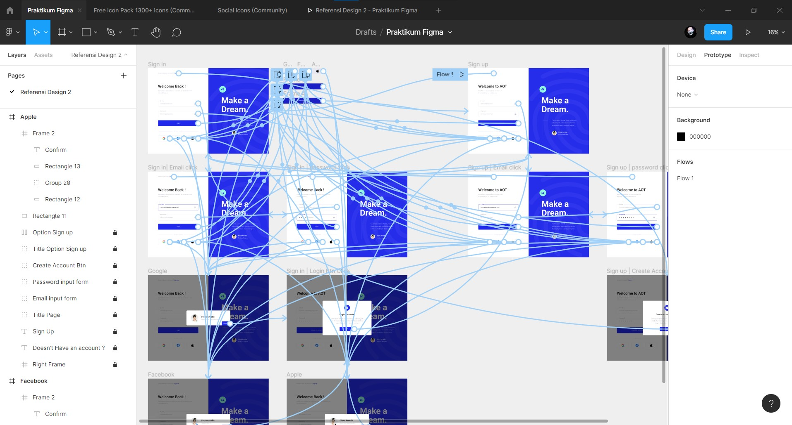

Figma
Content that contains my summary of this lesson
What is Figma ?
Figma adalah salah satu editor grafik vektor dan alat prototyping berbasis web, dengan fitur offline tambahan yang dapat digunakan pada macOS dan Windows.
Beberapa kelebihan yang dimiliki figma antara lain :
- Gratis (untuk dua user dan tiga project per akun)
- Dapat berjalan di Mac dan PC (Sketch hanya dapat berjalan di Mac)
- Dapat mengimport file sketch namun kita tidak bisa mengeksport nantinya
- Hand-off/Spesifikasi Pengembang terintegrasi untuk Mac dan PC
- Pembuatan prototipe berkualitas tinggi yang terintegrasi
Selain memiliki kelebihan tentunya figma memiliki kekurangan yaitu tidak dapat berjalan ketika kita sedang offline.
IDE/Tools Figma
Beberapa IDE / Tools yang dimiliki figma antara lain :
- Menampilkan seluruh project dan file
- Menambahkan single file
- Draft
- Collaboration Team
- Create new team
Prototype Figma
Dikarenakan figma merupakan salah satu prototype tools , figma mempunyai fitur prototype yang dapat diterapkan disetiap desain kita , dengan adanya prototype kita dapat membuat desain kita terlihat interaktif terutama ketika ingin mempresentasikan desain kita ataupun pada saat diberikan ke developer.
Task
Pada tugas kali ini saya disuruh membuat ulang desain yang telah dipilih sebelumnya menggunakan figma , dan juga beserta prototype pada desain tersebut.
{kind=link}
Berikut link project figma yang sudah saya buat :